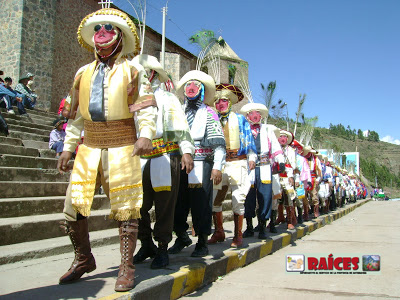
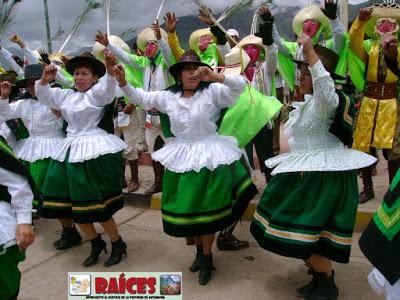
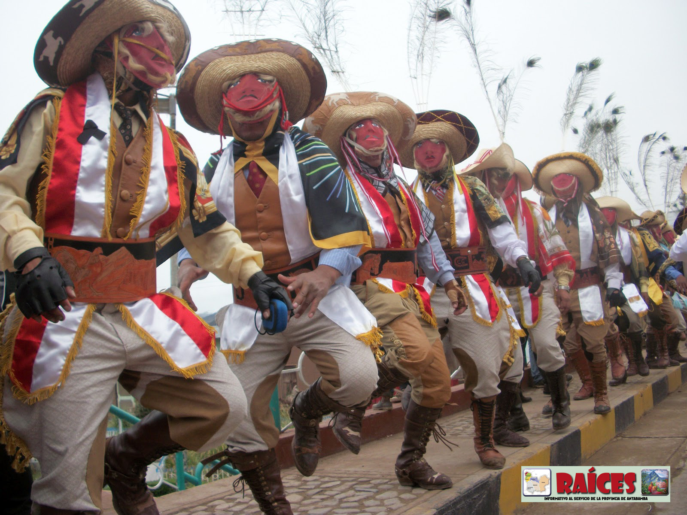

CALIDAD Y ELEGANCIA EN LA HUAYLIA ANTABAMBINA
18 de noviembre de 2026
En la provincia de Antabamba-Apurímac-Perú, realizan la festividad de la HUAYLIA, como máxima EXPRESIÓN CULTURAL de los PUEBLOS ANDINOS...
Leer más →Perú



Somos presa escrita y digital de la provincia de Antabamba, tierra de tradiciones. Nuestro compromiso es simple:
18 de noviembre de 2026
En la provincia de Antabamba-Apurímac-Perú, realizan la festividad de la HUAYLIA, como máxima EXPRESIÓN CULTURAL de los PUEBLOS ANDINOS...
Leer más →